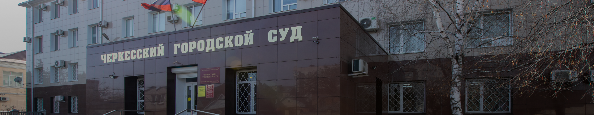

Первое упоминание о Черкесском городском суде Карачаево-Черкесской Республики в архивных данных датируется
концом 1945 года.
Так, согласно сохранившимся архивным данным после окончания Великой Отечественной войны в 1945 году народный
суд г. Черкесска возглавлял народный судья Эрак, в конце декабря 1945 года народным судьей Черкесского
городского народного суда стал Бакун И.И.
Со второй половины 40-х и до начала 60-х годов народный суд г. Черкесска был поделен на два судебных
участка. Народный суд 1-го участка города Черкесска возглавляли в разные годы Латков, Соловьева Л.Н.,
Аносова Е.Н., работали народные судьи Крикун Г.Д., Пантюшенко Ж.В., Махно П.Е., Злобин В.С., Петрушков Е.Н.,
Сидельников В.А., Тунин В.Ф.
Народный суд 2-го участка города Черкесска был организован в 1946 году, его возглавил Бакун И.И., затем в
разные годы работу суда организовывали народные судьи Романов Г.Г., Пантюшенко Н.В., работали народные судьи
- Курганский К.Е., Петрушков Е.Н., Михайлов В.М., Костикова Н.Н.
К середине 1960-х годов судебные участки города Черкесска были объединены в единый Черкесский городской
народный суд. Возглавил работу суда Злобин В.С., работали народные судьи Тунин В.Ф., Павлик А.Д. В разные
годы руководили городским народным судом Павлик А.Д., Костин В.Е., Барболин Г.П., Жолудев И.С., Супрунов
В.М. Осуществляли правосудие в разные годы судьи Черкесского городского народного суда Поздняков В.Я.,
Балебок В.П., Пантюшенко Н.В., Карданов К.К., Рыбина Л.С., Белозубова Г.П., Третьякова В.А., Аслануков Н.А.,
Матакаева С.К., Папшуов М.Ш. и другие.
В 1994 году Черкесский городской народный суд был переименован в Черкесский городской суд.
С декабря 1995 года до января 1997 года обязанности председателя городского суда исполняла Задерякина Н.Г. С
1997 года по 2007 год суд возглавлял Бадалов И.Н. В период с 2007 по 2009 год судом руководил исполняющий
обязанности председателя Черкесского городского суда Чотчаев Д-И.Ш. С 2011 года по июль 2018 года суд
возглавляла Привалова Н.А. С августа 2018 года до июня 2019 обязанности председателя Черкесского городского
суда исполнял Темрезов Т.Б. С 2020 год по 2022 год Черкесским городским судом руководил Лепшоков Н.А. С
сентября 2022 года обязанности председателя исполняет Ижаев Р.Х.
В 2000 году Черкесский городской суд становится десятисоставным, в 2002 году пятнадцатисоставным, в 2009
году двадцатишестисоставным, в 2013 году двадцатипятисоставным. В настоящее время в штате Черкесского
городского суда 23 судьи.
В целях быстрого и качественного рассмотрения дел с 2006 года в городском суде введена специализация по
рассмотрению уголовных, гражданских и административных дел.

Черкесский городской суд
Председатели
Галерея